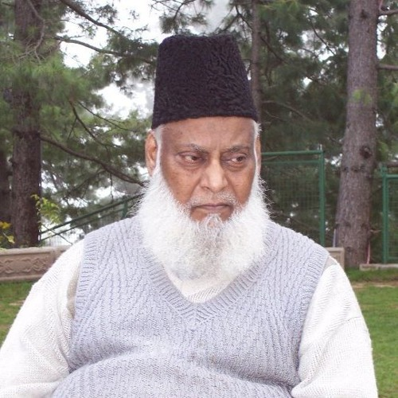

Dr. Israr Ahmad
The man who changed a lot of minds through his lectures & Philosophy

Dr Israr Ahmad, the Islamic theologian, Philosopher, and Islamic scholar
- 1932 Born in Hisar, Punjab, India
- 1948 After creation of Pakistan, He moved to Sahiwal, Pakistan with his family.
- 1950 After graduating from a local high school, Dr Israr Ahmad moved to Lahore to attend the King Edward Medical University.
- 1954 He received his MBBS degree from King Edward Medical University and began practising medicine
- 1965 He alone started his Qur'an Daras
- 1971 He founded Enjuman Khudaman-e-Islam
- 1975 He founded Tazeem-e-Islami, which advocates implementation of Qur'an & Sunnah
- 2010 He died natural death in a Hospital
Gone from our sight, but never from our hearts
His Efforts for brining Islamic Ummah on one plateform can't forgotten. Still after 20 years of his Death, He is a inspiration for a lot a peoples. His videos lectures are guidance for this Ummah
If you have time, you should read more about this incredible human being on his Wikipedia entry